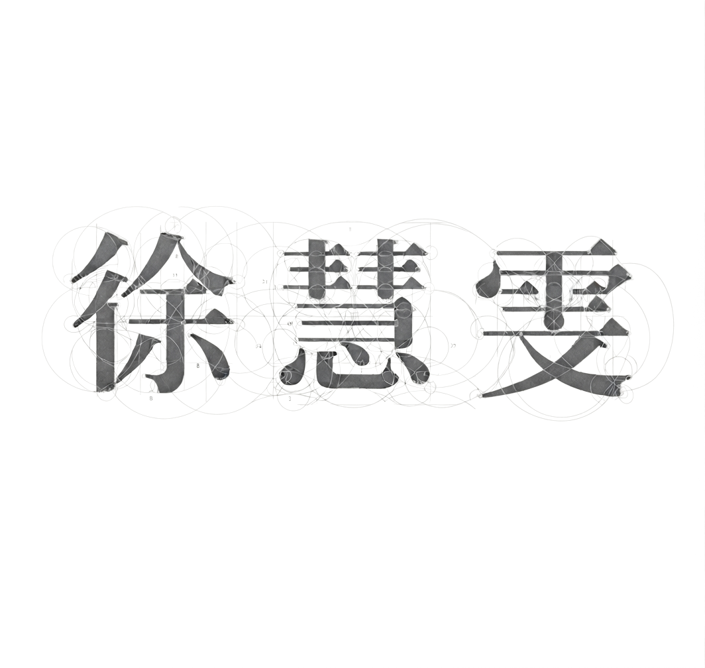
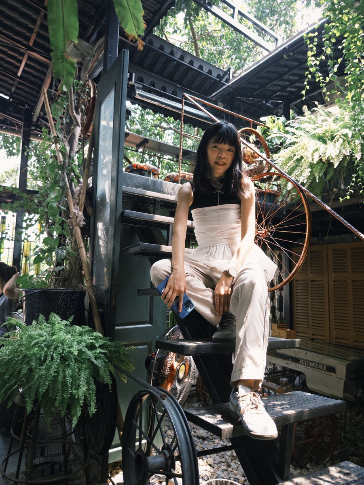

徐慧雯

SELECTED
HUI-WEN HSU

色彩不是裝飾，
是語言。
每一次動筆之前，我們先問的不是「要做成什麼風格」，而是「這個空間，原本想說什麼」。於是你會在作品裡看到外露鋼構與有機曲線並肩、冷靜灰階被一抹芥末黃或湖水綠打破、一整面牆用幾何色塊講完一個產業的全部邏輯。
我們不迷信固定的風格，只迷信「對的想法」——新的色彩、新的材料、新的科技，都值得被嘗試。因為設計從來不是把空間變漂亮，而是把一個想法，變成走得進去、感受得到的地方。
給我們一個故事，我們還你一個有個性的空間。
閱讀完整經歷 ABOUT →職涯時間軸
在正式踏入室內設計產業之前，曾任職於城市綠洲運動用品店、濱江花市暑期工讀、法式餐酒館服務生，畢業當年也曾赴澎湖打工換宿。這些第一線工作雖與設計無關，卻累積了顧客溝通、現場應變與團隊合作的底子，成為日後長期與業主、廠商、工班協調共事的基礎。
2020 年正式進入室內設計產業，任職於辰希室內裝修，開始接觸商業空間、公共空間的圖面繪製與空間規劃，期間參與「台中某醫院美食商場」競圖並成功獲選。約半年的歷練，建立起商業空間尺度與機能配置的判斷力，成為下一階段深入辦公室設計的起點。
2020 年 12 月加入薪彩室內裝修，大量投入辦公室裝修與商業空間設計，從平面配置到施工圖繪製，完成多個實際落地作品。這段期間打下的圖面精準度與辦公空間規劃經驗，成為之後接觸更複雜住宅設計與視覺表現時的重要基礎。
2023 年 8 月轉往橙果創意國際設計，首次跳出商辦領域，深入住宅空間規劃、施工圖深化、3D 建模與渲染圖製作。截然不同的空間尺度與生活機能需求，逼著圖面細節與視覺表現能力再進一步，補齊了從「平面規劃」邁向「完整設計提案」所需要的表現力。
2023 年 11 月加入旭誼工程精裝部擔任繪圖工程師，工作以辦公室裝修設計為核心，但這是職涯真正的轉折——範疇從圖面延伸到工程現場，開始接觸現場丈量、監工、工程協調與第一線溝通，第一次真正理解「設計如何被實際蓋出來」。2026 年主導旭誼工程內部 10 樓辦公室專案，完整走完室內裝修送審流程並取得使用執照，是職涯至今最重要的里程碑，代表已具備從設計、圖面、施工到法規申請的完整能力閉環。
精選作品
不是工程師，
是懂空間、也在用 AI 造工具的設計者。
我的背景是室內設計。在實務工作中，我開始使用 AI 工具協助開發軟體，並逐漸對程式開發產生興趣——目前已用 Claude 協助開發兩套內部工具：內部文件資料產生器、室內裝修報價軟體，透過 AI 協助拆解需求、建立功能、測試與優化。這裡誠實呈現的是「AI 輔助開發」的歷程，而不是資深工程師的經歷。
室內設計 Interior Design
AI 輔助開發 AI-Assisted Development
軟體 Software
作品集
目前尚無此分類的作品。
徐慧雯
HUI-WEN HSU
我是一名具有近十年室內裝修產業經驗的室內設計與繪圖工程師，專長於現場丈量放樣、平面配置、空間規劃、3D 建模與渲染，並具備材料選擇、客戶溝通、工程監工及現場問題處理能力。過去參與公共工程、商業空間、廠辦及住宅等案件，熟悉從前期規劃、圖面設計、裝修送審到現場施工的完整流程。
近年開始將 AI 融入設計與工作流程，具備 AI 協同設計與工具開發經驗，目前已實際開發兩套內部工具：內部文件資料產生器及室內裝修報價軟體。透過 AI 協助拆解需求、建立功能、測試與優化，將原有的設計與工程經驗轉化為數位工具，提升工作效率。
- 2020 年以前跨產業歷練 — 銷售、花市工讀、餐飲服務等第一線工作，累積顧客溝通與現場應變能力
- 2020商業空間設計 — 辰希室內裝修有限公司，商業／公共空間圖面繪製與空間規劃
- 2020.12–2023.08辦公室設計與施工圖 — 薪彩室內裝修有限公司，辦公室裝修平面配置與施工圖繪製
- 2023.08–2023.11住宅設計與視覺表現 — 橙果創意國際設計有限公司，住宅空間規劃、3D 建模與渲染圖製作
- 2023.11–2026繪圖工程師・設計與工程整合 — 旭誼工程股份有限公司精裝部，辦公室裝修設計延伸至現場監工、工程協調；2026 年主導內部 10 樓辦公室專案，完整走完裝修送審流程並取得使用執照
設計 / 繪圖
工程 / 現場
AI 輔助開發
完整時間軸
在正式踏入室內設計產業之前，曾任職於城市綠洲運動用品店、濱江花市暑期工讀、法式餐酒館服務生，畢業當年也曾赴澎湖打工換宿。這些第一線工作雖與設計無關，卻累積了顧客溝通、現場應變與團隊合作的底子，成為日後長期與業主、廠商、工班協調共事的基礎。
2020 年正式進入室內設計產業，任職於辰希室內裝修，開始接觸商業空間、公共空間的圖面繪製與空間規劃，期間參與「台中某醫院美食商場」競圖並成功獲選。約半年的歷練，建立起商業空間尺度與機能配置的判斷力，成為下一階段深入辦公室設計的起點。
2020 年 12 月加入薪彩室內裝修，大量投入辦公室裝修與商業空間設計，從平面配置到施工圖繪製，完成多個實際落地作品。這段期間打下的圖面精準度與辦公空間規劃經驗，成為之後接觸更複雜住宅設計與視覺表現時的重要基礎。
2023 年 8 月轉往橙果創意國際設計，首次跳出商辦領域，深入住宅空間規劃、施工圖深化、3D 建模與渲染圖製作。截然不同的空間尺度與生活機能需求，逼著圖面細節與視覺表現能力再進一步，補齊了從「平面規劃」邁向「完整設計提案」所需要的表現力。
2023 年 11 月加入旭誼工程精裝部擔任繪圖工程師，工作以辦公室裝修設計為核心，但這是職涯真正的轉折——範疇從圖面延伸到工程現場，開始接觸現場丈量、監工、工程協調與第一線溝通，第一次真正理解「設計如何被實際蓋出來」。2026 年主導旭誼工程內部 10 樓辦公室專案，完整走完室內裝修送審流程並取得使用執照，是職涯至今最重要的里程碑，代表已具備從設計、圖面、施工到法規申請的完整能力閉環。
履歷
- 希望職稱
- 室內設計與繪圖工程師｜AI 輔助開發／數位工具應用
- 總年資
- 8–9 年工作經驗
- 通訊地
- 新竹市
- Phone
- 0988-837-783
合作與聯絡
歡迎室內設計相關職缺、案件合作，或 IT／軟體／AI 輔助開發方向的機會與我聯繫。
- vicky84921@yahoo.com.tw
- Phone
- 0988-837-783
- 〔待補〕
- Location
- 新竹市 Hsinchu, Taiwan
後台管理
正在確認權限…
此帳號密碼僅為您自訂的登入畫面，實際存取權限仍由 Claude 平台的編輯權限把關。